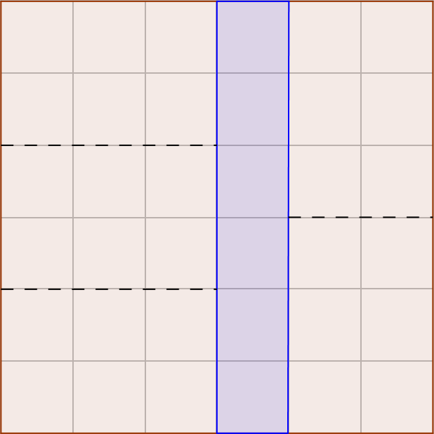

I recently came across a really nice way to determine the expected number of vertices of the convex hull of a point set picked uniformly at random from some convex body in $\mathbb{R}^2$. For instance, suppose we pick $n$ points uniformly at random from a unit square or unit circle. It turns out in these cases, the number of points on the convex hull is $O(\log n)$ and $O(n^{1/3})$ respectively.
At first glance, it is not so clear how to determine these bounds and in general, it might seem that any argument should be tailored to the specific shape we are picking from. However, there is a really nice argument due to Efron which I read about in this paper by Sariel Har-Peled that lets us somewhat abstract away from the shape we are picking from. The following theorem originally due to Efron allows us to relate the size of the convex hull to the area covered by the convex hull.
Theorem 1 (Efron's Theorem): Let $C$ be a bounded convex set in the plane, such that the expected area of the convex hull of $n$ points, chosen uniformly and independently from $C$, is at least $Area(C)(1-f(n))$, where $0 \le f(n) \le 1$. Then the expected number of vertices of the convex hull is at most $nf(n/2)$.
Proof Sketch: We split the $n$ points into two batches $B_1$ and $B_2$ each of size $n/2$. Conditional on $B_1$, any point in $B_2$ must be outside of the convex hull of $B_1$ for it to be possibly on the convex hull of $B_1 \cup B_2$. Then the bound follows from the law of iterated expectations.
Using the above theorem, we can employ a general strategy to determine the size of the convex hull for any convex body: break up the convex hull into equal parts, and argue about the parts that were hit. For instance in the case of a square, partition the square into roughly $n/\log(n)$ smaller squares. Then by a coupon collector argument, we hit all of these small squares when we take $n$ uniformly random points. Therefore, the enclosed area is at least $$1-O\left(\sqrt{\frac{n}{\log n}} \right) \frac{\log n}n = 1-O\left( \sqrt{\frac{\log n}{n}}\right)$$ which means that the convex hull has $O(\sqrt{n\log n})$ vertices from Theorem $1$. While it is not the tight $O(\log n)$ bound, this relatively straightforward argument at least tells us that the convex hull has $o(n)$ vertices.
To get the tight $O(\log n)$ bound, we need a more careful analysis. I will describe a high level summary of the argument in the Har-Peled paper cited above. We first partition the square into smaller sub squares of side length $1/n$. To bound the area covered by the convex hull, we want to count the number of squares are outside the convex hull. To do so, we split the count by first counting the number of squares ‘above’ the convex hull (and then multiplying by $4$ for the $4$ directions). Towards this goal, we look at how many squares are above the convex hull for the $j$th column.
To do so, we partition the area on the left side of the $j$th column into equal slabs so that each slab has area roughly $1/n$. We also do the same for the right side of the $j$th column. Note that since the two sides have a different number of columns, the slabs are of different height. Each slab on the left side consists of roughly $n/j \times j$ of the smaller sub squares while each slab on the right side consists of roughly $n/(n-j) \times n-j$ of the smaller sub squares. Therefore, the ‘heights’ of the slabs on the left side are $n/j$ while the heights of the slabs on the right side are $n/(n-j)$ For example, see the figure below.

Since each slab has area roughly $1/n$ be design, it follows that we will hit one of the first few slabs on both the left and right side when we pick $n$ uniformly random points. Therefore, the convex hull will ‘see’ all of the $j$th column except for possibly $O(n/j+n/(n-j))$ smaller squares (imagine drawing a line connecting the highest point hit on the left side to the highest point hit on the right side). Summing over all columns, we will omit $O(n\log n)$ of the smaller squares. Therefore, the total area of the convex hull is at least $1-O(\log n/n)$ and therefore from Theorem $1$, it follows that the number of vertices of the convex hull is $O(\log n)$.
In the above paper there is a similar analysis in the case of a unit circle in $\mathbb{R}^2$ showing that the number of vertices in this case is $O(n^{1/3})$. Similarly in the case of a triangle, it is also proven that the number of vertices is $O(\log n)$. We can immediately extend this result to any convex polygon with $k$ sides by taking a triangulation that uses $k$ triangles which gives $O(k \log n)$ vertices of the convex hull.
Something interesting to note is the difference between a circle and a polygon. It seems reasonable that we can approximate a circle extremely well by taking a convex polygon with say $100$ sides, but the above result shows that “switching k and n” does not result in the same limit asymptotically. For some reason that I don't fully understand, the convex hull of points in a circle has significantly more vertices than points in any convex polygon. For instance, take any convex polygon $k$ sides and replace any edge with a small sector of a circle (for instance, imagine a hemisphere which is half a circle and a flat side). Then asymptotically, the number of vertices on the convex hull suddenly goes from $O(k \log n)$ to $O(n^{1/3})$ even though the change seems very small.